Metadata with meaning.
Inspect sampled presence and activity, queue transitions, and freshness. Verified identity bindings connect observed nodes to declared seats.

Read the docsTHE OPENRIG OBSERVABILITY COMPANION
A fleet-wide view.
A closer look at every agent.
Explore Sentinel’s constellation, inspect individual seats, and move through recorded moments. OpenRig runs the fleet. Sentinel makes its observations visible.
The interface, up close. Select a team, inspect a seat, or scrub between recorded moments.
How the two views differA CLEAR CHAIN OF EVIDENCE
OpenRig runs the fleet. Its upstream exporter carries the signals. Sentinel gives those observations a local home.
Agent and queue authority
Pinned, separate dependency
Local journal + read API
Inspect sampled presence and activity, queue transitions, and freshness. Verified identity bindings connect observed nodes to declared seats.
Allowlisted observations enter a SQLite journal. Prompts, message bodies, and raw exporter batches stay out of stored records.
Read bounded history and snapshots at a journal cursor. Receipt order is explicit; source causality and historical completeness remain separate questions.
HONEST BY DESIGN
A quiet source is not proof of a healthy fleet. An old sample is not a current observation. Sentinel keeps the distinction visible.
Understand the observation modelA fresh, supported sample can show working activity for a verified seat. It does not establish whether the agent is coding, testing, or reviewing.
Static examples only. This website never connects to your fleet.
A DELIBERATE BOUNDARY
Sentinel observes through an existing telemetry boundary. OpenRig keeps authority over agents, queues, and execution.
THE SENTINEL KNOWLEDGE BASE
Start with the essentials. Explore the architecture. Keep the exact contract close at hand.
Prerequisites, setup, and a careful path to verified telemetry.
Read the getting started guide WIKIArchitecture, identity, freshness, and the meaning of an observation.
Explore the wiki REFERENCE & SPECSCLI commands, API routes, JSON Schemas, and TypeScript declarations.
Browse the specificationsBUILT FOR A CLOSER LOOK
Local companion · v0.4.0
Review readiness and limitations